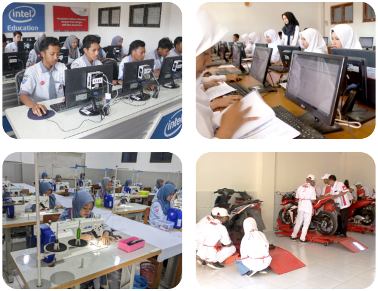
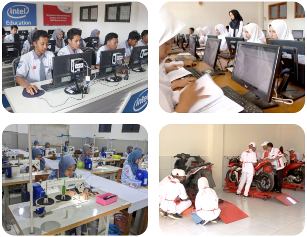
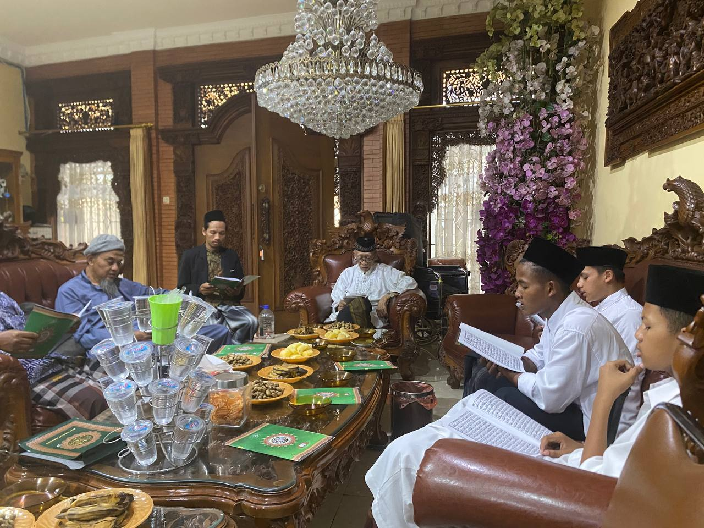
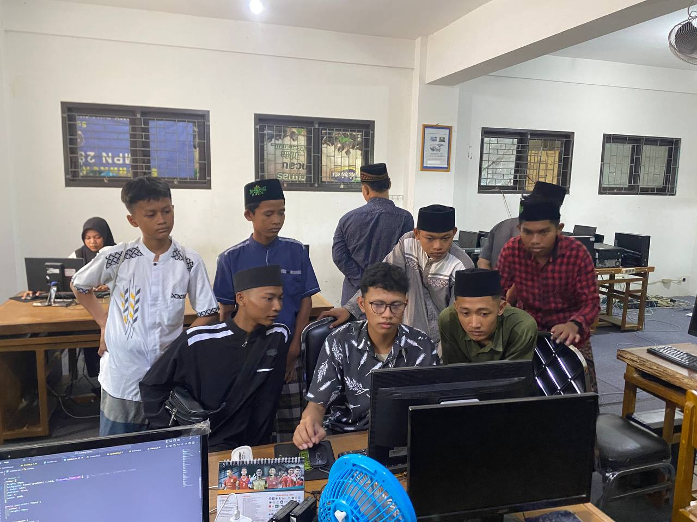
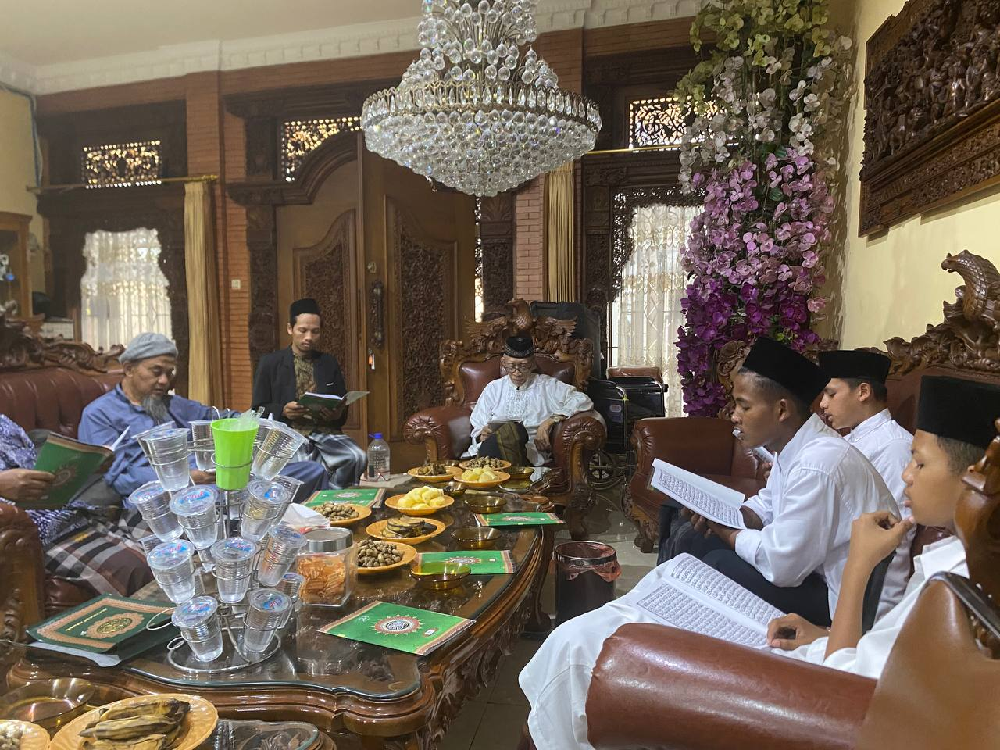
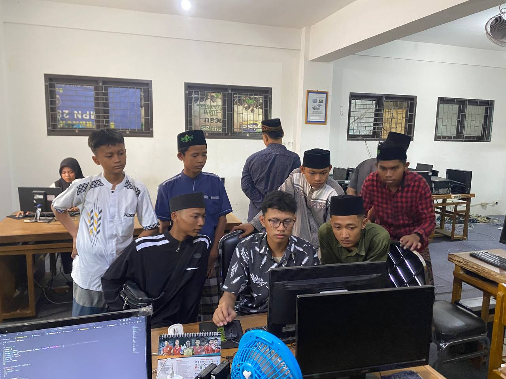

Sejarah Pondok Modern Lukman Hakim
"Mencetak generasi Robbani yang berjiwa Agamis dan Nasionalis"

SPIRIT PONDOK
Allah berfirman, “Hanyalah yang memakmurkan masjid-masjid Allah ialah orang-orang yang beriman kepada Allah dan hari kemudian, serta tetap mendirikan sholat, menuaikan zakat dan tidak takut (kepada siapapun) selain kepada Allah, maka merekalah orang-orang yang diharapkan termasuk golongan orang-orang yang mendapat petunjuk.” QS. At-Taubah: 18Sejarah Singkat
Pondok Lukman Hakim yang sudah berdiri sejak tahun 2019 ini sudah memiliki santri dari berbagai kalangan, terutama dari kalangan yatim, piatu, fakir, miskin, yang rata-rata memiliki kemampuan akademik yang bagus tetapi terhalang oleh keadaan ekonomi. Dan saat ini Pondok Modern Lukman Hakim sedang membangun masjid serta fasilitasnya. Dengan membangun fasilitas serta masjid yang layak dan memadai maka para santri juga akan lebih nyaman dan baik dalam menuntut ilmu dan belajar agama agar menjadi anak yang sholeh dan sholehah dan selalu mengalirkan pahala terus menerus untuk kedua orang tua dan juga para Donatur yang telah membantu.
Visi dan Misi Pondok Modern Lukman Hakim
VISI
“Mencetak generasi pemimpin bangsa yang berkarakter Qur’ani dan berjiwa wirausaha kreatif dalam membangun peradaban Islam di masa depan.”
MISI
- Membina peserta didik yang mampu mengoptimalkan ruhiyah, fikriyah dan jasadiyah.
- Menyiapkan pemimpin yang memiliki jiwa agamis dan nasionalis yang tinggi
- menyiapkan generasi yang siap berdakwah bilhal (akhlaq) didunia industri dan ditengah masyarakat
- Mewujudkan pribadi berakhlaq mulia, profesional dan islami
- Menyiapkan SDM (sumber daya manusia) yang siap diterjunkan didunia corporte sesuai jurusan yang diminati santri
- Membentuk entrepreneur muslim yang mempunyai spirit agama dan negara
Tujuan Pendirian
Menghadapi perkembangan zaman yang semakin maju dengan teknologi, artinya tantangan umat islam kedepan jauh lebih berat, setelah jajaran yayasan bertafakur dan banyak berdo'a agar diberi petunjuk oleh Allah swt, maka dengan mengucap bissmilah dan dibarengi niat yang kuat karena mengharap ridhonYA, kami mendirikan lembaga pendidikan pondok pesantren dimana kami berharap melalui wasilah lembaga ini, nantinya bisa mencetak para santri yang barkarakter islami yang siap diterjunkan didunia corporte sesuai jurusan yang diminati santri, karena di pondok ini nantiya kami mengkombinasikan pedidikan pondok dan SMK sehingga dengan jurusan yang digeluti oleh santri nantinya kami berharap bisa menjadi bekal untuk membangun kemandirian ekonomi.
Pondok Modern Lukman Hakim berkosentrasi pada dua skil, demi terjuwudya insan kamil(Manusia sempurna), yaitu soft skil dan hard skil
Soft Skil (Kecerdasan Spiritual)
yaitu kami berfokus pada pendidikan karakter yang islami, mulai dari pendidikan adab, penguatan aqidah, perbaikan ibadah dengan materi ilmu fikih dan pendalaman ilmu al-Qur'an serta dibarengi dengan materi tazkiyatun nafs (penyucian jiwa) dll.
Hard Skil (Kecerdasan Financial)
yaitu kami berfokus pada skil yang diminati oleh para santri dengan kurikulum dan laboratorium standard industri, sehingga nantinya para santri siap untuk kemudian diterjunkan didunia Industri

 


 


